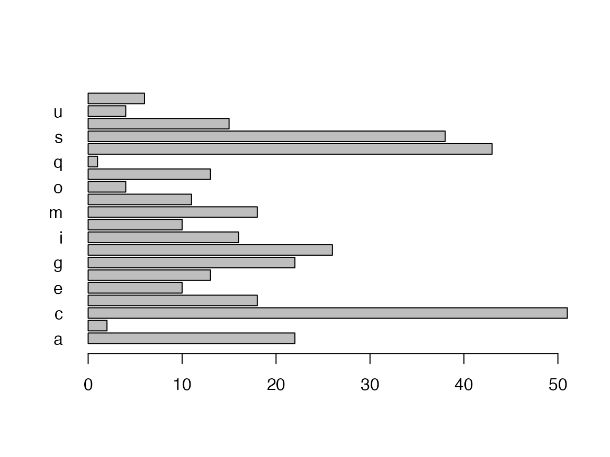

Today is a good day to start documenting what this package (kwb.utils) can be used for.
The main purpose of the package “kwb.utils” is to provide functions that allow for writing cleaner and safer code. One main characteristic of clean code is that it is free or at least almost free of duplication. This is a very hard goal to achieve! But we should try our best!
I would like to start with a complete list of the names of the functions that are contained in this package. But how can I get such a list?
In fact, I do not know (any more) how to achieve this. However, I know that this package contains a function assignPackageObjects() that copies all the objects that are contained in a package (including all its functions) to the global environment. By inspecting the definition, i.e. the body, of this function, we can learn how this function works. Therefore, just type the function’s name, without parentheses, and press Enter:
kwb.utils::assignPackageObjects
#> function (package)
#> {
#> for (name in ls(getNamespace(package))) {
#> object <- get(name, envir = asNamespace(package), inherits = FALSE)
#> assignGlobally(name, object)
#> }
#> }
#> <bytecode: 0x46b0e40>
#> <environment: namespace:kwb.utils>As the code reveals, the function loops through the values that are returned by ls(getNamespace(package)) where package is the name of the package. This is exacly what we need. We can use this code to get the names of all objects in the “kwb.utils” package. Let’s store these names in the variable object_names:
Wow! There are 233 objects (functions) defined in this package. So where should I start?
To make it somehow scientific, let’s have a look at the distribution of the function names, grouped by their first letter:
letter_distribution <- table(substr(sort(tolower(object_names)), 1, 1))
barplot(letter_distribution, horiz = TRUE, las = 1)
Even though not the highest peak, there are a lot of function names starting with h. Among these are functions that are prefixed by hs. We could find the names of these functions with the function stringStartsWith(), that is provided in this package (see String Functions, below). As, since R version 3.3.0, there is a function startsWith() in base R, we should use that one instead:
object_names[startsWith(object_names, "hs")]
#> [1] "hsAddMissingCols" "hsChrToNum"
#> [3] "hsCountInStr" "hsDelEmptyCols"
#> [5] "hsMatrixToListForm" "hsMovingMean"
#> [7] "hsOpenWindowsExplorer" "hsPrepPdf"
#> [9] "hsQuoteChr" "hsRenameColumns"
#> [11] "hsResolve" "hsRestoreAttributes"
#> [13] "hsSafeName" "hsShell"
#> [15] "hsShowPdf" "hsStringToDate"
#> [17] "hsStringToDouble" "hsSubstSpecChars"
#> [19] "hsSystem" "hsTrim"
#> [21] "hsValidValue"The functions prefixed by hs are the oldest. When I started writing functions, I thought that it is important to indicate that these functions are user-defined functions, as opposed to base R functions. Reading the book Clean Code by Robert C. Martin convinced me to use clean names that can be pronounced easily.
I tried to group all package functions per topic or per type of object that they either work on or return. These groups are listed below and described in further detail in one dedicated article per group.
These functions take different types of arguments as input but have all in common that they return a vector of logical. Some of these functions are just a shortcut to a rather long expression aiming at making the code more readable and avoiding duplication, such as allAreEqual(), allAreIdentical(), almostEqual(), isNaOrEmpty() or isNullOrEmpty(). Others do more complex things, such as matchesCriteria() that evaluates a set of conditions on a data frame, returning TRUE or FALSE depending on whether a row matches all conditions or not. Another more complex function is hsValidValue() that checks if a vector of character seems to contain numerical values.
For details, see Functions Returning Logical.
The functions prefixed by string are wrappers around some simple grep expressions and exist since a former trainee asked me to provide these functions.
For details, see String Functions.
For details, see Input and Output Functions.
For details, see Mathematical or Statistical Functions.
For details, see Functions Working on Data Frames.
For details, see Functions Working on Lists.
For details, see Array/Matrix Functions.
For details, see Vector Functions.
For details, see General Object Functions.
For details, see Conversion Functions.
For details, see Shortcut Functions to if-statements.
For details, see Operating System Functions.
For details, see Check Functions.: Functions that check for prerequisites
For details, see Debug Functions.
For details, see Compare Objects.
For details, see Calling Functions.
For details, see Cryptographic Functions.
For details, see Grammar/Dictionary Functions.
For details, see Non-Categorised Functions.